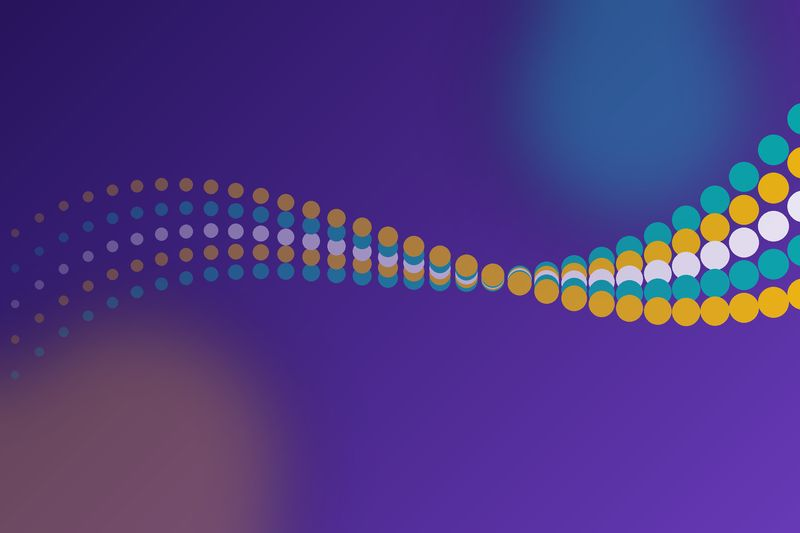
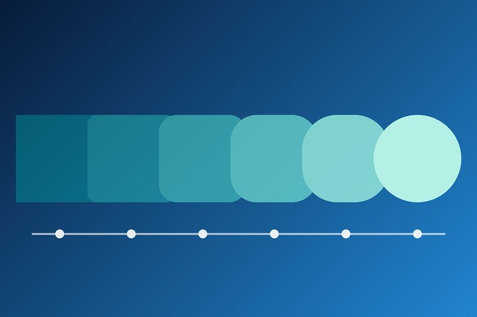
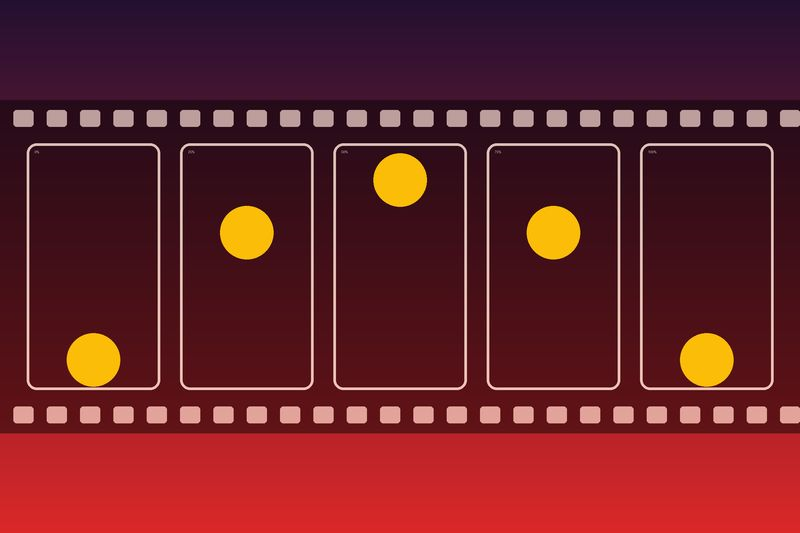
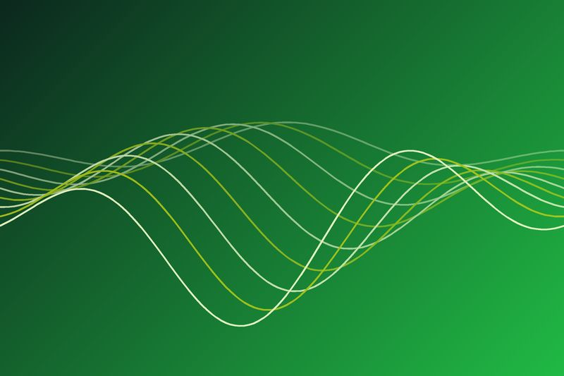
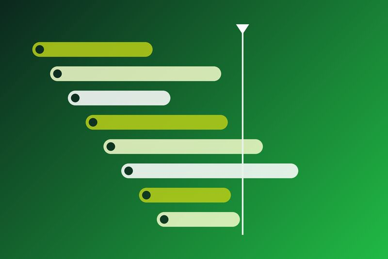
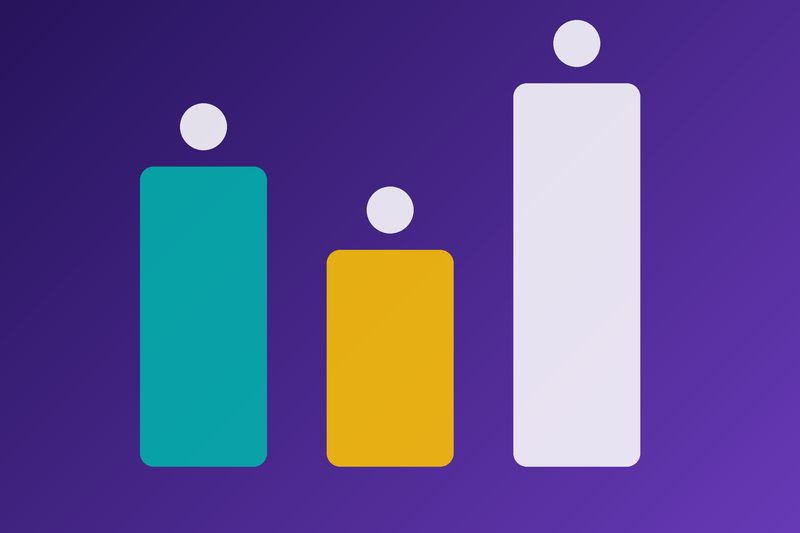
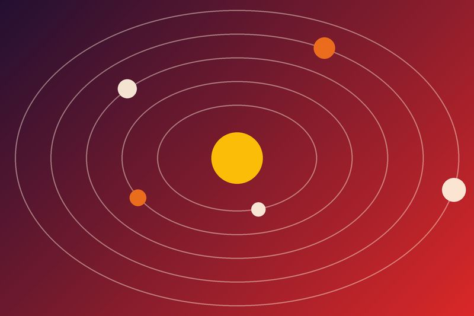

Как плавно менять цвет, размер и положение элементов при наведении.
Анимации и переходы в вебе
Учебный сайт о том, как делать анимации на CSS, JavaScript и с помощью библиотеки GSAP.
О сайте

Этот сайт я сделал в рамках учебного проекта по CSS-фреймворкам. Тема проекта — анимации и переходы. Здесь собраны основные способы «оживить» веб-страницу: от простых CSS-переходов до библиотеки GSAP.
В каждом разделе есть немного теории, примеры кода и небольшие демо, которые можно попробовать прямо на странице. Сайт сверстан на фреймворке Semantic UI, а анимации на самом сайте сделаны с помощью CSS и GSAP.
Зачем нужна анимация
Анимация на сайте нужна не только для красоты. Правильно сделанная анимация помогает пользователю понять, что происходит на странице:
- показывает, что действие выполнено (например, кнопка нажалась);
- объясняет, откуда появился новый элемент (выпадающее меню, модальное окно);
- привлекает внимание к важному — ошибке в форме или уведомлению;
- делает интерфейс приятнее и «живее».
Но если анимации слишком много или она слишком медленная, сайт начинает раздражать. Поэтому важно знать меру.
Разделы сайта

CSS-переходы

CSS-анимации
Правило @keyframes и анимации, которые работают без JavaScript.

JavaScript
requestAnimationFrame и Web Animations API.

GSAP
Популярная библиотека для сложных анимаций и таймлайнов.

Сравнение
Таблица: что лучше выбрать для своей задачи.

Галерея
Картинки-иллюстрации к разным видам анимаций.
Основные правила
- Длительность обычного перехода — от 200 до 500 мс.
- Лучше всего анимировать свойства
transformиopacity, они работают быстрее всего. - Для появления элементов подходит
ease-out, для исчезновения —ease-in. - Анимация должна что-то объяснять, а не просто отвлекать.
- Нужно учитывать настройку
prefers-reduced-motionдля людей, которым мешает движение на экране.